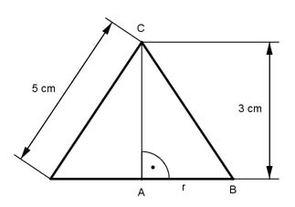

Aufgabe 209 Der Achsenschnitt eines Kegels ist ein gleichschenkliges Dreieck mit einer Höhe h von 3 cm und der Länge l eines Schenkels von 5 cm. Wie groß sind das Volumen V und die Mantelfläche M des Kegels?  Satz von Pythagoras im Dreieck ABC: 5² cm² = r² + 3² cm² |-3²cm² r² = 25 cm² - 9 cm² = 16 cm² |√ r = 4 cm л * r² * h л * 4² cm² * 3 cm V = ------------- = --------------------- = 50,2 cm³ 3 3 M = л * r * s = л * 4 cm * 5 cm = 62,8 cm²